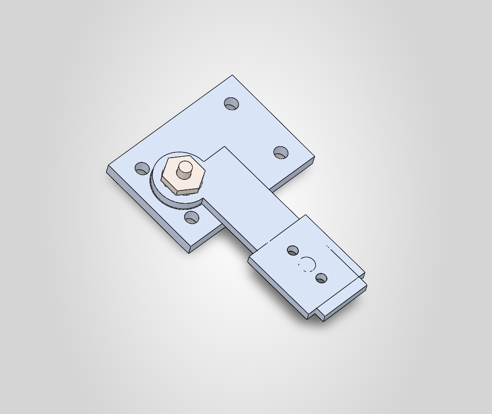
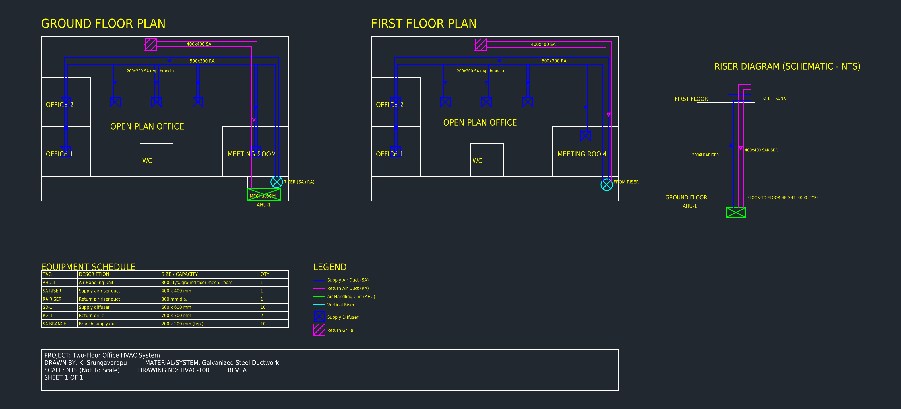
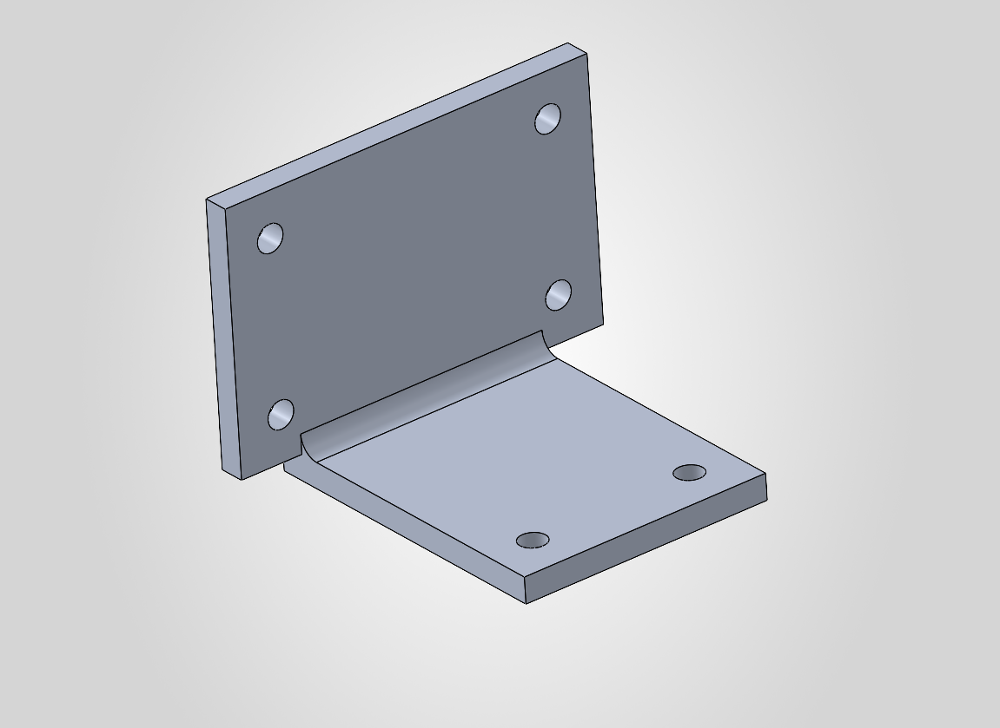

Projects
Drawing No. PORT-003
SolidWorks, Assembly

Adjustable Sensor / Camera Mount Assembly
Requirement
Mount a sensor or camera to a vehicle frame or equipment chassis, with the ability to adjust viewing angle after installation.
Design
5-part assembly: a base plate with a pivot boss, a rotating arm on a steel pin, and a sensor plate bolted to the arm's tip. Modeled natively in SolidWorks with full feature trees, not imported geometry.
Analysis / Detailing
Fully dimensioned drawing with GD&T: a datum on the mounting face, a position tolerance (⌀0.1) on the pivot hole, and a flatness callout (0.05) on the mating boss surface.
Result
Working mechanism: the arm and sensor plate pivot together as one rigid unit around the base, fully constrained by 7 mates (Concentric + Coincident).
SolidWorks
Assembly Mates
GD&T
Al 6061-T6
Drawing No. PORT-002
AutoCAD, MEP

Two-Floor Office HVAC System
Requirement
Full supply and return air distribution for a two-story, 150 m² per floor office building, served by a single ground-floor air handling unit.
Design
Ground floor mechanical room houses the AHU; a vertical riser carries supply and return air up to the first floor. Each floor branches from its trunk to diffusers in the offices, meeting room, and open-plan area, with a dedicated return path back to the AHU.
Detailing
Dedicated riser diagram showing the floor-to-floor vertical connection, an equipment schedule (duct sizes, diffuser counts), and a legend distinguishing supply, return, and equipment on their own layers.
Result
A complete, two-sheet-equivalent MEP layout: full ductwork sizing (400×400 trunk, 200×200 branches, 500×300 return) carried consistently across both floors and the riser schematic.
AutoCAD 2D
MEP / HVAC
Riser Diagram
Multi-Floor
Drawing No. PORT-001
SolidWorks + AutoCAD

Universal Equipment Mounting Bracket
Requirement
A general-purpose L-bracket to mount a motor, pump, or sensor to a wall or frame, resisting a cantilevered bending load.
Design
Reinforcing gusset carries bending load in tension/compression rather than pure shear at the base. Fillet at the inside corner specifically reduces stress concentration.
Result
Full 2D AutoCAD drawing (top / front / side views, dimensioned) alongside a parametric 3D model: same part, two toolchains.
AutoCAD 2D/3D
Al 6061-T6
Stress Reduction
Drawing No. PORT-004
ANSYS Fluent, CFD

Vehicle Idle Emission Dispersion — Multispecies CFD Analysis
Requirement
Quantify how exhaust gases (CO, CO2, H2O, N2, O2) from a vehicle idling inside an enclosed garage disperse and concentrate, to assess pollutant buildup and validate a multispecies flow model.
Design
Modeled a 15m × 10m garage, a Honda Civic (2018, 1.5L) exhaust geometry, and ventilation fan/jet housing in ANSYS DesignModeler, then generated a refined tetrahedral mesh around the car body and exhaust outlet.
Analysis
Solved coupled species transport in Fluent using a Lattice Boltzmann-based multi-fluid approach, tracking mass fractions of CO2, H2O, N2, O2, and CO, with convergence checked via scaled residuals and flux/mass balance reports.
Result
Contour plots show a clear pollutant concentration hotspot directly behind the exhaust outlet.
ANSYS Fluent
CFD
Multispecies Flow
Lattice Boltzmann Method
Drawing No. PORT-005
ANSYS Fluent, CHT
EV Battery Pack Cooling Plate — Conjugate Heat Transfer Analysis
Requirement
Evaluate whether a liquid-cooled plate can hold an 8-cell 18650 battery module near coolant temperature under sustained heat generation, as part of an EV battery pack thermal management study.
Design
Scoped an 8-cell (2×4) sub-assembly from a full 32-cell reference pack, trimmed in SolidWorks. Modeled a simplified 3-loop serpentine coolant channel directly beneath the cells, sized to a 6mm hydraulic diameter and built to align with the existing assembly's coordinate system.
Analysis
Solved a coupled solid-fluid (CHT) model in ANSYS Fluent: laminar water-glycol 50:50 coolant (14°C inlet, 0.44 m/s) through the channels, bonded thermal contact between cells and plate, and a volumetric heat source on each cell. Convergence confirmed via scaled residuals and direct volume-integral checks on solved temperature fields.
Result
Cell temperatures stayed within hundredths of a degree of the coolant inlet temperature even under an aggressive heat load, confirming the cooling plate design is not the thermal bottleneck. Pathline traces show stable, attached flow through all three U-turns with no recirculation.
ANSYS Fluent
Conjugate Heat Transfer
SolidWorks
Battery Thermal Management
Drawing No. PORT-006
ANSYS Mechanical, FEA
Suspension Control Arm — Static Structural FEA
Requirement
Check whether a cast aluminum lower control arm survives a representative worst-case wheel load, a combined vertical bump and lateral cornering event, sourced as a complex single-part casting with two chassis-side bushing eyes and one wheel-side ball-joint eye.
Design
Assigned A356-T6 cast aluminum properties (186 MPa yield, 72.4 GPa modulus) in ANSYS Engineering Data. Fixed supports at both chassis bushing eyes, load applied at the ball-joint eye: 13,244 N vertical (≈3g bump at a 450 kg corner weight) combined with 5,297 N lateral (≈1.2g cornering).
Analysis
Solved as static structural with large deflection enabled once initial results showed non-trivial deformation. Cross-checked the FEA deflection against a hand-calculated cantilever-beam estimate using the part's actual cross-section before trusting the result.
Result
Max von Mises stress reached 1.55 GPa, about 8x the material's yield strength, with a minimum safety factor of 0.12 across most of the arm's rib section. The casting cannot survive this load case in A356-T6 aluminum at this cross-section; a thicker rib section or a switch to steel would be required to bring the safety factor above 1.
ANSYS Mechanical
Static Structural FEA
Large Deflection
Automotive Suspension
Drawing No. PORT-007
SolidWorks, Mechanical Integration


EV Battery Pack — Mechanical Integration
Requirement
Sourced a complex GrabCAD battery pack assembly (Outer Box, Lid, Casing, 731×356×206mm envelope) and scoped a full mechanical integration package: vehicle mounting, lid fastening, busbar routing, and a high-voltage service disconnect — demonstrating DFM/DFA judgment on top of an existing enclosure design.
Design
Cut 6 Ø10mm mounting bosses into the Outer Box for vehicle-side attachment and a 14-hole Ø6mm fastener pattern into the Lid, referenced off the lid's inner flange rectangle for consistent, symmetric bolt spacing. Rebuilt the internal Casing from scratch as a solid body — 13 divider walls at 27.5mm pitch forming 12 cell-row channels sized for a 372-cell 21700 pack (12 rows × 31 cells) — after the sourced casing proved to be a single fused, non-manifold surface body unsuitable for direct modification. Added a busbar routing notch (14×5mm) to each wall top for series interconnects between rows, and a service disconnect cutout on the lid (Ø45mm bore + 4-hole M4 mounting flange on a 55mm bolt circle) positioned clear of the fastener pattern for HV isolation during maintenance.
Analysis
Diagnosed and worked around two distinct import defects in the sourced STEP/native files: open-shell (non-solid) geometry inherited from the original SolidWorks surface export, and a genuinely non-manifold casing surface that failed Knit Surface with "more than two sheet bodies at a single edge junction." Used Trim Surface as a solid-conversion workaround for the Outer Box and Lid, and independently regenerated the Casing as clean, extrudable solid geometry once the sourced surface proved unrepairable.
Result
Delivered a fully-integrated pack structure: vehicle mounting interface, symmetric lid fastening, a busbar-routed cell casing sized for 372 cells, and a clearly located HV service disconnect — each feature dimensioned and cross-checked against the part's actual measured geometry rather than assumed nominal values.
SolidWorks
Surface Repair / Trim Surface
DFM / DFA
Battery Pack Integration
Skills
CAD & Drafting
SolidWorks (parts, assemblies, drawings, GD&T), AutoCAD 2D/3D, CATIA V5, Fusion 360
Simulation
ANSYS Fluent, FEA, CFD, meshing, turbulence modeling, model validation
Inspection & Quality
NDT Level 2 (ASNT-SNT-TC-1A): UT, RT, MPT, LPT, Visual Inspection
Programming
Python, MATLAB Simulink, Git